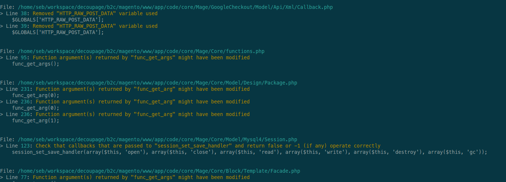

PHP 7 : Migrez !
AFUP Lyon - 23 mars 2016
@srogier /
srogier
Sondages express
Vous avez des tests unitaires ?
Et une couverture de code à 100% ?
Migrer depuis 5.6 : RTFM !
http://php.net/manual/en/migration70.php
PHP 7 Compatibility Checker
https://github.com/sstalle/php7cc

Docker, Vagrant, etc.
Attention aux extensions PHP
https://github.com/gophp7/gophp7-ext/wiki/extensions-catalog
Ume migration peut en cacher une autre
Mais au final, ça vaut le coup
|
Fiche produit |
Panier |
| Wall time |
-22 % (-320ms) |
-13 % (-370ms) |
| CPU time |
-23 % (-310ms) |
-15 % (-390ms) |
| Memory |
-41 % (-19Mb) |
-41 % (-25Mb) |
Merci pour votre attention
Des questions ?